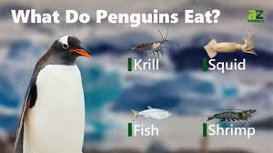

The Habitat of Macaroni Penguins & Their Diets

The Macaroni Penguins Home
Macaroni Penguins call sub-Antarctic islands home. You can find a huge colony located near Cape Lockyer on Heard Island. It's a protected area where Macaroni Penguins build nests on surprisingly steep slopes or flat ground. There are more than 250 Macaroni Penguin colonies across the Southern Ocean. Although while hunting for food they can travel as far north as southern Brazil and South Africa. Even with safety among numbers, Macaroni Penguins face predators on both land and in sea. Their eggs, chicks and dead adults may are at risk of becoming food for predatory birds, including skuas, giant petrels, snowy sheathbills and gulls. To defend themselves penguins will basically yell at their predators and begin slapping them with their rigid flippers. While at sea, Penguins have to watch out for fur seals, leopard seals and killer whales. Their black and white plumage is a form of camouflage against the sea or sky called countershading. They will also porpoise like a dolphin to try and build up speed and confuse predators.
What's on the Menu?
- Krill
- Shrimp
- Fish
- Squid
Depending on the breeding stage, a macaroni penguin will travel anywhere between 30 miles and 1,200 miles while hunting for food. A hunt can last up to 3 weeks! To asure they get an adequate amount of food, a macaroni penguin can dive up to 375 feet and hold their breath for up to 3 minutes at a time! Penguins are known to eat more marine life than any other seabird. As a human parents, the way and type of food we feed our children change as they grow and develop. As a penguin chick, they cannot digest their food like their parents do. The adult penguin will hunt, and swallow the food whole in order to save the food for their chicks later, allowing them to continue hunting and gather more food. There's actually numerous ways a parent penguin will feed their young...none of them sounding appealing to us as humans, but in a sense similar to us feeding a human baby a bottle or pureed baby food as they start to develop and grow. One option is known as regurgitation, the adult with partially digest the food within a few hours, the parent will then cough up the mixture of partially digested food, feeding it to their chick directly from their bill. If the adult wants to keep hunting for longer, another option is "refrigeration," which like our kitchen appliance, allows the parent to keep the food good for several days. This prey is swallowed whole and stores in the adults body at room temperature with natural enzymes preventing it from starting the digestion process.